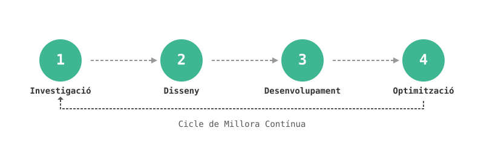

Agents i Assistents d'IA
Assistents d'IA Personalitzats
Bots conversacionals per a suport i automatització.
Intel·ligència Documental
Extreu i analitza dades de documents.
Integració amb Base de Coneixement
Respostes impulsades per IA des dels teus recursos interns.
Agents per a Tasques Específiques
Automatitza reunions, entrada de dades i informes.
IA per a Atenció al Client
Suport al client automatitzat 24/7.
IA Multilingüe
Solucions d'IA en diversos idiomes.
Integració d'IA
Integració de Sistemes
Connecta la IA amb les teves eines existents.
Automatització de Fluxos
Automatitza processos rutinaris de negoci.
Fluxos de Dades
Fluxos de dades fiables per a aplicacions d'IA.
IA al Núvol
IA escalable a AWS, Azure o Google Cloud.
IA On-Premise
Implementacions segures i locals d'IA.
IA Mòbil
Funcions d'IA per a apps iOS i Android.
Estratègia d'IA
Avaluació de Preparació
Avalua el teu potencial i necessitats d'IA.
Anàlisi de ROI
Projecta el valor de la IA per a la teva empresa.
IA Ètica
Garanteix equitat, privacitat i compliment.
Full de Ruta de Transformació
Pla pas a pas per a l'adopció d'IA.
Formació en IA
Capacita el teu equip per a l'èxit en IA.
Selecció de Proveïdors
Tria les millors plataformes i socis d'IA.
Capacitats Avançades d'IA
Visió per Computador
Analitza imatges i vídeos per obtenir coneixements.
IA de Veu i Parla
Reconeixement de veu i interacció parlada.
Analítica Predictiva
Pronostica tendències i resultats de negoci.
IA Generativa
Text, imatges i codi generats per IA.
Sistemes de Recomendació
Suggeriments personalitzats per a usuaris.
Models d'IA Personalitzats
IA adaptada a les teves necessitats úniques.
Beneficis de les Nostres Solucions d'IA
- Augmenta l'eficiència operativa i automatitza tasques repetitives
- Pren decisions empresarials més intel·ligents i basades en dades
- Redueix costos i optimitza l'assignació de recursos
- Accelera la innovació i el temps de llançament al mercat
- Ofereix experiències personalitzades als clients a gran escala
- Obté un avantatge competitiu amb capacitats avançades d'IA
El Nostre Procés d'Implementació d'IA

1. Investigació i Avaluació
Avaluem les necessitats, recursos de dades i sistemes existents per identificar les oportunitats d'IA més valuoses per a la teva organització.
2. Disseny de la Solució
Creem un pla detallat per a la teva solució d'IA, incloent arquitectura, funcionalitats, punts d'integració i un cronograma clar d'implementació.
3. Desenvolupament i Integració
Desenvolupem i implementem la teva solució d'IA, assegurant una integració perfecta amb els teus sistemes i fluxos de treball per a un màxim impacte.
4. Proves i Optimització
Provem i perfeccionem rigorosament la teva solució d'IA segons el feedback i mètriques de rendiment per maximitzar el valor i el ROI.
Preparat per transformar la teva empresa amb IA?
Contacta amb The Apps Garden per parlar de com les nostres solucions d'IA poden abordar els teus reptes empresarials i desbloquejar noves oportunitats.
team@theappsgarden.com